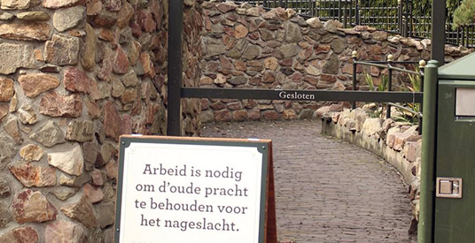

Positivity
Oorsprong
Het sprookjesbos in de Efteling
Beschrijving
In het sprookjesbos in de Efteling worden zo nu en dan attracties gerenoveerd. Het is natuurlijk jammer dat je deze attractie dan niet kunt bekijken. De mededeling brengen ze op een positieve manier door de teksten te laten rijmen. Dit maakt het een stuk minder erg dat iets gesloten is.
Toepassen UX domein
Hoe je deze richtlijn in het UX domein kunt toepassen, is door er bij negatieve voorgevallen een positieve draai aan te geven. Een duidelijk voorbeeld is de 404 error wanneer een website het niet doet. Probeer dan iets leuks te laten zien, of vertel het op een leuke manier. Zo ontstaat meer begrip bij de gebruiker.
Bron
http://www.creativebloq.com/web-design/best-404-pages-812505
Oorsprong
Textieldrukkerij Brezo BV in Kampen
Beschrijving
verhaal langer hangen. Soms kan iets als saai worden bevonden maar zodra je er humor in brengt blijft de boodschap langer hangen. Zo ga je ook anders naar dingen kijken en blijkt iets toch erg leuk te zijn.
Toepassen UX domein
Zorg dat je bij je design humor toepast zodat je de aandacht trekt van gebruikers en ze een positieve ervaring meegeeft. Het maakt niet uit welke functionaliteit op je website het is. Denk goed na over hoe je mensen een glimlach kunt bezorgen en kunt vermaken. Coolblue doet dit door middel van hun bezorgbusjes. Als je het CoolBlue busje ziet rijden krijg je daar een positief gevoel van. Mocht je een keer iets nodig hebben denk je terug aan het busje en zul je daar eerder gaan bestellen.
Bron
http://vance.nl/waarom-we- in-design- en-marketing- veel-meer- humor-kunnen-gebruiken/
Oorsprong
Escape Room Rijswijk
Beschrijving
Verliezen is meestal minder leuk dan winnen, maar het hoeft niet zo zwart wit zijn. Als je totaal geen moeite moet doen om te winnen, voel je je waarschijnlijk veel minder trots. Als je verliest, maar je hebt ondertussen veel lol gehad met vrienden, maakt het eigenlijk niet zoveel uit. Dit laat zien dat je gebruiker helemaal niet hoeft te ‘winnen’ om toch een goede ervaring te hebben.
Toepassen UX domein
Tripadvisor of andere reisaanbieders helpen gebruikers om een reis te vinden. Echter soms zit de ideale reis er gewoon niet tussen. Maar als de website prettig in gebruik is zal de gebruiker terug blijven komen.

Bron
-
Oorsprong
Het wachten in de rijen bij de Efteling wordt een leukere ervaring gemaakt. Er wordt in de rij een decor gebouwd dat aansluit bij de attractie en hier wordt vaak ook muziek en dergelijke afgespeeld.
Beschrijving
Deze richtlijn zorgt ervoor dat de gebruiker minder snel gefrustreerd raakt van het lange wachten, doordat het wachten leuker gemaakt wordt en eventueel hierdoor ook korter lijkt.
Toepassen UX domein
In de bron hieronder zegt Aja frost: “Interestingly, when given the choice between a speedy long line and a slow short line, people will choose the long line. We like to feel as though we’re continually making progress.” Een progress indicator op een website heeft dus ook dit effect.
Bron
https://www.sitepoint.com/make-users-enjoy-waiting/
https://blog.zopim.com/2015/05/19/creative-ways-to-keep-customers-entertained-while-waiting/
https://uxplanet.org/progress-indicators-in-mobile-ux-design-a141e22f3ea0#.fkdroztwx
http://uxmovement.com/buttons/how-to-make-progress-bars-feel-faster-to-users/
http://www.msichicago.org/fileadmin/Activities/Games/simple_machines/
https://www.sitepoint.com/12-creative-clever-preloader-designs/
Oorsprong
First look
Beschrijving
Wanneer iemand goed is in een vak betekent niet dat jij hem kan overtreffen.
Toepassen UX domein
Twijfel niet aan je ontwerp maar vraag altijd feedback. Daarnaast als iemand beter is in het vak betekent niet gelijk dat jouw ontwerp minder goed is. Ga ervoor en laat het aan de publiek zien hoe uniek jouw ontwerp is.
Bron
(http://www.deccanherald.com/content/574441/every-design-unique.html)
Oorsprong
Mediacenter Rotterdam Surf & Play
Beschrijving
Door een beleving te creëren op plekken of momenten waar dat niet perse nodig is, beïnvloed je de gebruiker op een positieve manier. Wanneer je bij een open dag de bezoeker zelf zijn pad laat volgen, en onderweg verschillende voorwerpen laat verzamelen, zal de bezoeker eerder geneigd zijn ook bij de dingen te gaan kijken die hij iets minder leuk vind. Omdat hij het verlangen heeft alle voorwerpen te verzamelen.
Toepassen UX domein
Bij UX design kan dit bijvoorbeeld toegepast worden door gebruikers om de zoveel tijd te belonen. Door Middel van slimme beloningen kan je de gebruiker onbewust manipuleren. Je kan hem zo iets laten doen wat hij van te voren niet perse van plan was. Achteraf zal de gebruiker deze ervaring als positief ervaren omdat hij immers beloond is en ook onbewust van de manipulatie is. Een simpel voorbeeld kan zijn een kortingscoupon op je verjaardag. Wanneer je zo’n coupon krijgt van een bedrijf waar je ooit klant van bent geweest, zal dat een positieve invloed hebben op jouw houding naar het bedrijf. Terwijl het je eigenlijk manipuleert om een aankoop te gaan doen die je vooraf niet van plan was.
Bron
http://www.crmtrends.com/loyalty.html